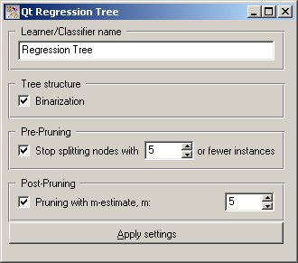
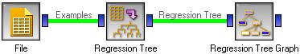
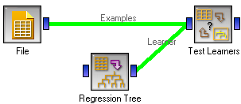

This is documentation for Orange 2.7. For the latest documentation, see Orange 3.
Regression Tree Learner¶

Regression Tree Learner
Signals¶
- Inputs:
- Examples (ExampleTable)
A table with training examples
- Outputs:
- Learner
The classification tree learning algorithm with settings as specified in the dialog.
- Regression Tree
Trained classifier (a subtype of Classifier)
Signal Regression Tree sends data only if the learning data (signal Examples) is present.
Description¶
This widget constructs a regression tree learning algorithm. As all widgets for classification and regression, this widget provides a learner and classifier/regressor on the output. Learner is a learning algorithm with settings as specified by the user. It can be fed into widgets for testing learners, for instance Test Learners.
Learner can be given a name under which it will appear in, say, Test Learners. The default name is “Regression Tree”.
If Binarization is checked, the values of multivalued attributes are split into two groups (based on the statistics in the particular node) to yield a binary tree. Binarization gets rid of the usual measures’ bias towards attributes with more values and is generally recommended.
The widget can be instructed to prune the tree during induction by setting Do not split nodes with less instances than. For pruning after induction, there is pruning with m-estimate of error.
After changing one or more settings, you need to push Apply, which will put the new learner on the output and, if the training examples are given, construct a new classifier and output it as well.
Examples¶
There are two typical uses of this widget. First, you may want to induce the model and check what it looks like with the schema below.
The second schema checks the accuracy of the algorithm.
